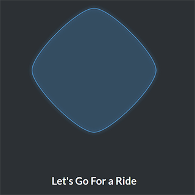
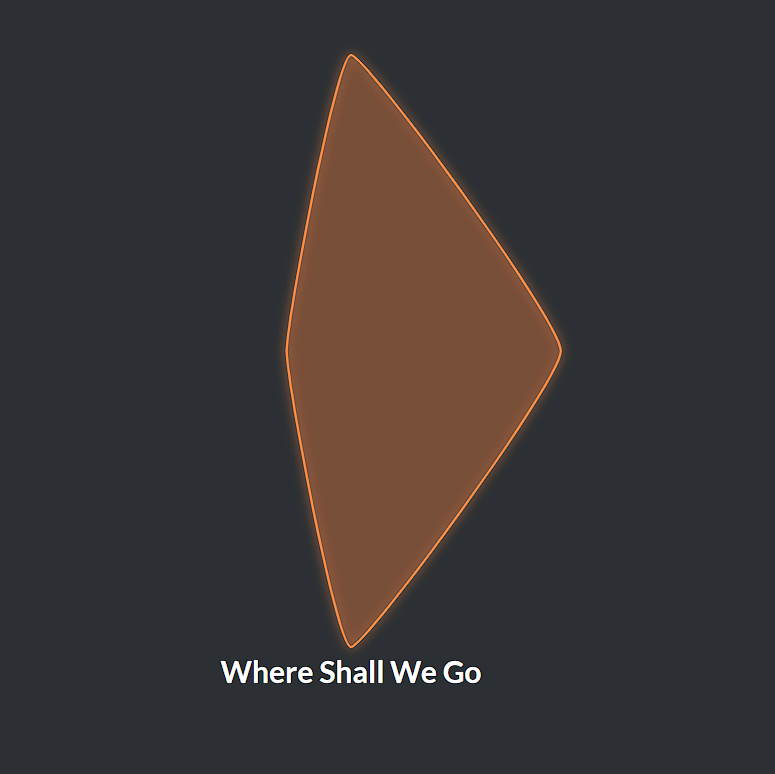
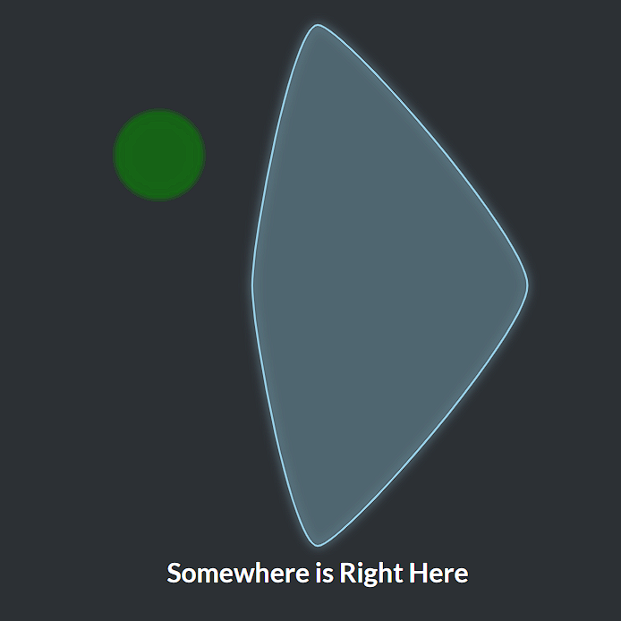
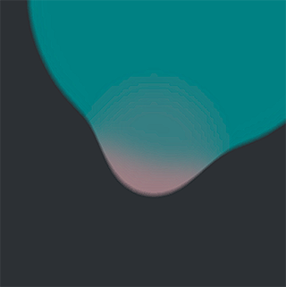
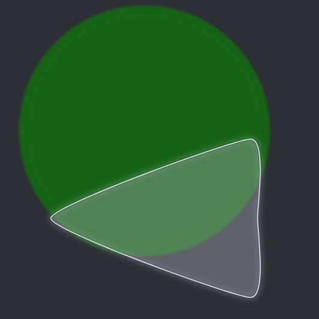
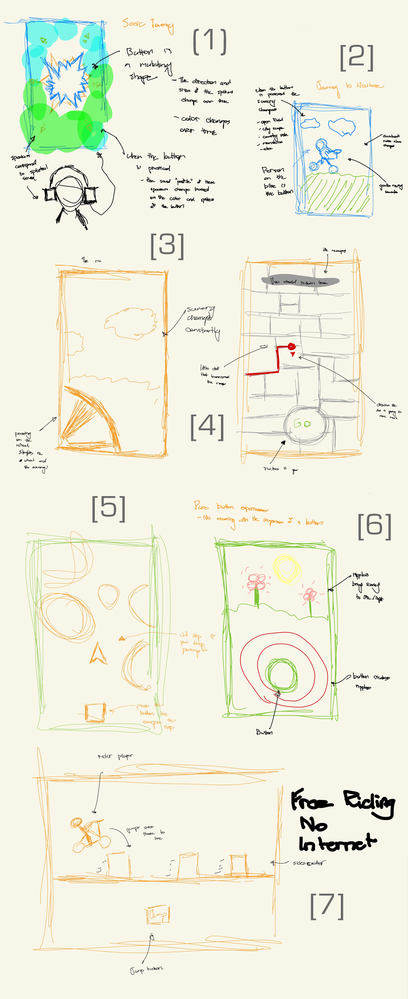
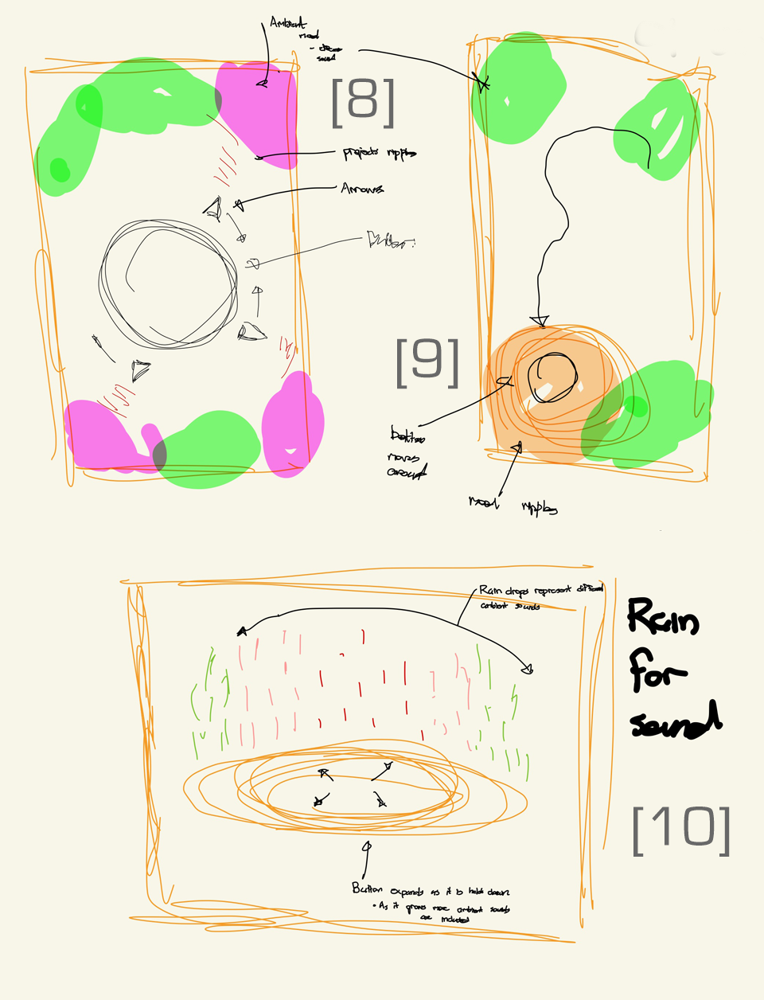
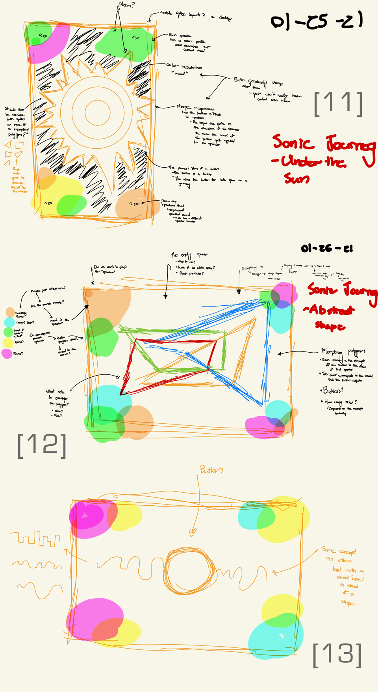
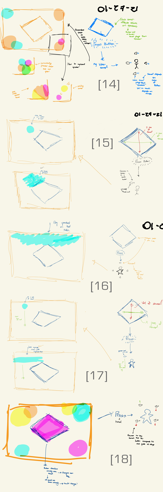
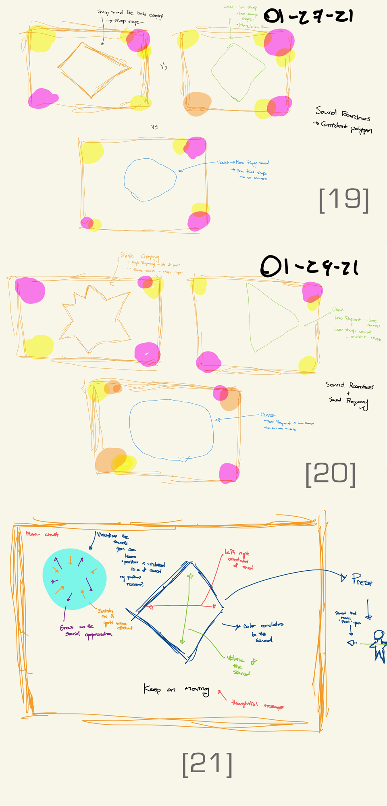

Sonic Journey
CPSC 581 - Assignment 0
Sonic Journey is an exploration of being blissfully lost. Built in Javascript using D3.js and Howler.js, Sonic Journey is an abstract representation of the delight that Ahmed, the client, takes in aimless motorcycle rides. In our brief interview together, Ahmed described the power of letting go of his worries and just being free, not caring where he is going. He also took pleasure in the new things he discovers along the way, as he puts it "unwrapping a christmas present everyday". Sonic Journey represents those loves of aimlessness, freedom and discovery as it takes you on a motorcycle ride to nowhere in particular.
How Does It Work

Starting your Journey
When you first open Sonic Journey, the button is a simple un-moving diamond. However when you click it, you can hear a motorcycle start up and the button begins to morph and change color. Your journey is underway
The Next Step
The morphing button represents the next thing you can discover on your journey. The color of the button represents the sound of the thing you can discover. The height of the button represents how loud that thing will be. The left-right dimensions represent how far to your left or right that thing will be. The button morphs fast, so while you may want to control it, it's often best just to follow the flow.


A New Discovery
When you click on a button, in the distance a sound appears! A corresponding circle also appears. As the sound approaches, the circle grows and soon enough the sound fades behind you as you past it with the circle along with it.
Your Journey Continues
As you click more, more sounds come into focus and soon enough some sounds start to blend together and as they do the circles also start to blend together.


Little More to Discover
One last thing before you go on your way. You can actually predict the type of sound a little bit. The "sharpness" of the button also relates to the "sharpness" of the sound. A very sharp sound will have a button with sharp edges!
Video Demo
Design Process
Initial Sketches
These initial sketches explore a range of different themes that try on focus on different aspects of the things that brought the client delight. For example [2,3,7] explored the idea of aimless wondering using variations of side-scrollers. Where as [4,5] explored that same theme using top-down navigation style game ideas. [6] went in a different direction and thought about the idea of discovering new things with a button that you held down and it uncovered new things about the world. An early version of Sonic Journey [1] was also included here.


Honing In On Sound
These sketches begin to hone in on sound as the means to explore the ideas of exploration. With [8,9] riffing on the early idea of sonic journey. In [8] the button is surrounding by moving arrows which direct sounds to different "speakers" where as in [9] the button moves and based on the local "sound mood" plays a different sound. [10] goes back to the idea of unwrapping new experiences with a similar concept to [6], but using sound
Sonic Journey - The Button
Running with Sonic Journey, these sketches begin to think about how the button should look like. With [11] showcasing a sun-like circle with spikes more similar to the original and [13] moving over to a more traditional waveform for the button. We also have [12] an early version of the final button


Sonic Journey - The Sound
With most of the ducks in the row on the base idea, these sketches thinking about how to use sound to get a journey. [14] shows off the initial idea of having different "speakers" that get affected by button presses and [16] iterates on that concept with the button just picking a "speaker" to play from. [15] shows off a different idea of just placing a sound in space based on the button, although this idea was scrapped due to the limitations of spatial sound on a normal headphones. [18] takes the idea of [14] and iterates on it by instead of creating a soundscape on button presses, focusing on particular sounds in an existing soundscape. Finally [17] shows off the final idea.
Refinement
These final sketches show reflection on feedback received about the design. [19,20] reflect on the feedback that a sharp shape would reflect a sharp sound, so these sketches start to think about how to create a variable button that can change on the sound. [21] reflects on feedback that approach sounds should make approaching shapes as opposed to falling shapes
